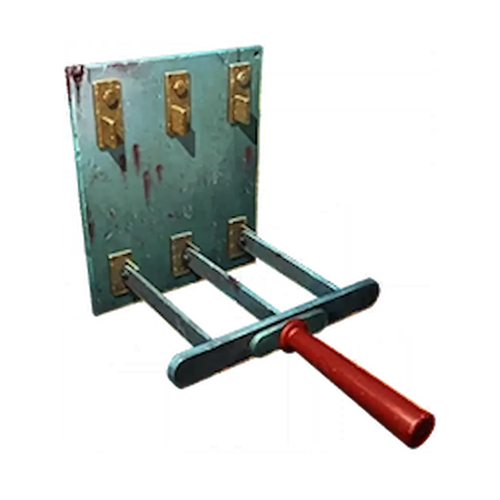

Musisz mieć ukończone główne zadanie Totenreich. Mecz możesz odpalić na dowolnym poziomie. Wyzwanie aktywuje sie na rundzie 20+.

Poza granicami mapy ukryte są cztery totemy. Na każdym z nich znajdują się czaszki jeleni.
WAŻNE: Użyj Karabinu snajperskiego, aby dokładnie policzyć czaszki na każdym z nich. Zapamiętaj lub zapisz, w której lokalizacji znajduje się konkretna liczba czaszek
Gdy już wiesz, gdzie ile czaszek wisi, udaj się do Bloodheim Hall.
Teraz potrzebujesz Tomahawk (Toporek do rzucania). Możesz go zdobyć jako losowy upuszczony przedmiot lub kupić przy Stole rzemieślniczym.
Wejdź w interakcję z portalem, aby rozpocząć wyzwanie.
Co daje ten Relikt?